CRVI000177Hank Mobley - Tenor Conclave
Designed by Bob Weinstock · Prestige LP 7074 · 1956
Designed by Bob Weinstock · Prestige LP 7074 · 1956

CRVI000154Mal Waldron - Mal-1
Designed by Reid Miles · Prestige LP 7090 · 1956
Designed by Reid Miles · Prestige LP 7090 · 1956
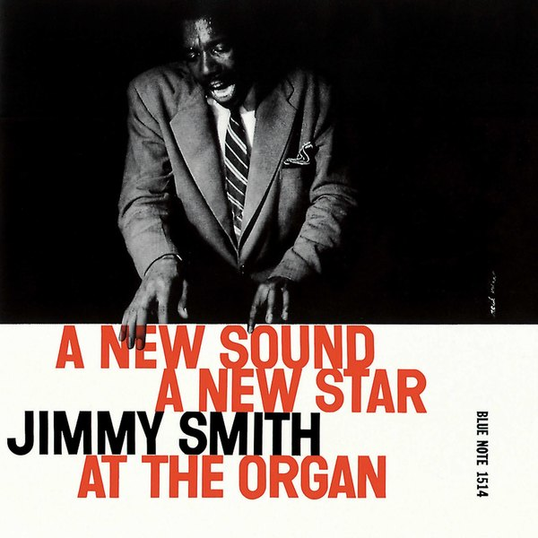
CRVI001148Jimmy Smith - A New Sound... A New Star... Jimmy Smith At The Organ Volume 2
Designed by Reid Miles, photograph by Francis Wolff · Blue Note BLP 1514 · 1956
Designed by Reid Miles, photograph by Francis Wolff · Blue Note BLP 1514 · 1956

CRVI000848form - form 8
Internationale Revue · 1959 · 1959
Internationale Revue · 1959 · 1959
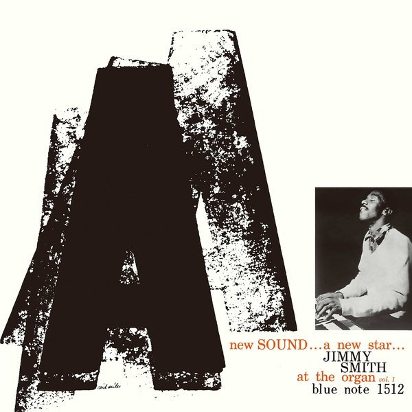
CRVI001149Jimmy Smith - A New Sound... A New Star... Jimmy Smith At The Organ Volume 1
Designed by Reid Miles, photograph by Francis Wolff · Blue Note BLP 1512 · 1956
Designed by Reid Miles, photograph by Francis Wolff · Blue Note BLP 1512 · 1956

CRVI000425Bob Thompson and His Orchestra & Chorus - Just For Kicks
Designer unknown · RCA Victor · 1959
Designer unknown · RCA Victor · 1959

CRVI000171Sonny Rollins - The Sound of Sonny
Designer unknown · Riverside RLP 12-241 · 1957
Designer unknown · Riverside RLP 12-241 · 1957

CRVI000783Paul Rand - No Way Out
Twentieth Century-Fox · 1950
Twentieth Century-Fox · 1950

CRVI000150Art Blakey's Jazz Messengers - Art Blakey's Jazz Messengers
Designed by Marvin Israel · Atlantic 1278 · 1957
Designed by Marvin Israel · Atlantic 1278 · 1957

CRVI000785Angelo Testa and Paul Rand - IBM (Furnishing fabric)
Linen · 304.8 × 132.1 cm · late 1950s
Linen · 304.8 × 132.1 cm · late 1950s

CRVI000793Roy Kuhlman - Yoo-Yoo
Journal of the American Medical Association · 1954
Journal of the American Medical Association · 1954

CRVI000792Roy Kuhlman - Californians Are Crazy
Esquire article opener · 1953
Esquire article opener · 1953

CRVI000169Chet Baker - Chet Baker & Crew
Designer unknown · Pacific Jazz 1224 · 1956
Designer unknown · Pacific Jazz 1224 · 1956
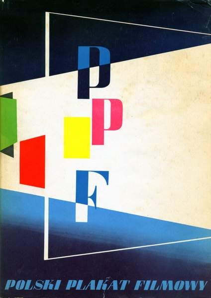
CRVI000763Tadeusz Gronowski - Polski Plakat Filmowy
Filmowa Agencja Wydawnicza, Warsaw · jacket design · 1957
Filmowa Agencja Wydawnicza, Warsaw · jacket design · 1957
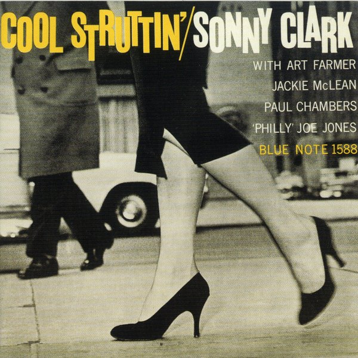
CRVI001172Sonny Clark - Cool Struttin'
Designed by Reid Miles, photograph by Francis Wolff · Blue Note BLP 1588 · 1958
Designed by Reid Miles, photograph by Francis Wolff · Blue Note BLP 1588 · 1958

CRVI001175Thelonious Monk - Thelonious Alone In San Francisco
Designed by Harris Lewine, Ken Braren, Paul Bacon, photograph by William Claxton · Riverside Records RLP 1158 · 1959
Designed by Harris Lewine, Ken Braren, Paul Bacon, photograph by William Claxton · Riverside Records RLP 1158 · 1959

CRVI000100Sid Bass - From Another World
Designer unknown · Vik · 1956
Designer unknown · Vik · 1956

CRVI001154John Coltrane - Coltrane
Designed by Esmond Edwards · Prestige PRLP 7105 · 1957
Designed by Esmond Edwards · Prestige PRLP 7105 · 1957
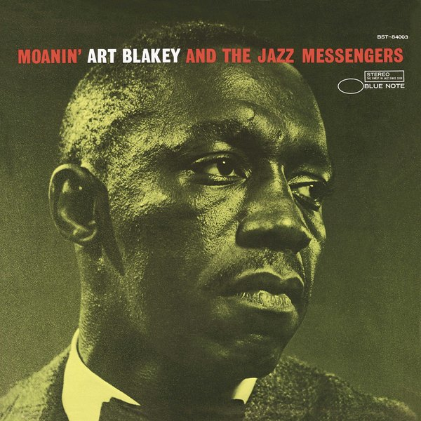
CRVI001119Art Blakey And The Jazz Messengers - Moanin'
Photograph by Buck Hoeffler · Blue Note BLP 4003 · 1959
Photograph by Buck Hoeffler · Blue Note BLP 4003 · 1959

CRVI000173Sonny Rollins - Work Time
Designer unknown · Prestige LP 7020 · 1955
Designer unknown · Prestige LP 7020 · 1955

CRVI001153John Coltrane - Blue Train
Designed by Reid Miles, photograph by Francis Wolff · Blue Note BLP 1577 · 1958
Designed by Reid Miles, photograph by Francis Wolff · Blue Note BLP 1577 · 1958
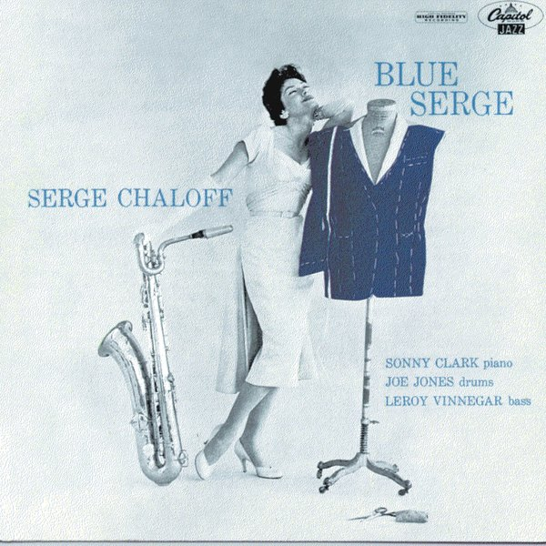
CRVI001171Serge Chaloff - Blue Serge
Designer unrecorded · Capitol Records T 742 · 1956
Designer unrecorded · Capitol Records T 742 · 1956

CRVI001122Cannonball Adderley - Somethin' Else
Designed by Reid Miles, photograph by Francis Wolff · Blue Note BLP 1595 · 1958
Designed by Reid Miles, photograph by Francis Wolff · Blue Note BLP 1595 · 1958
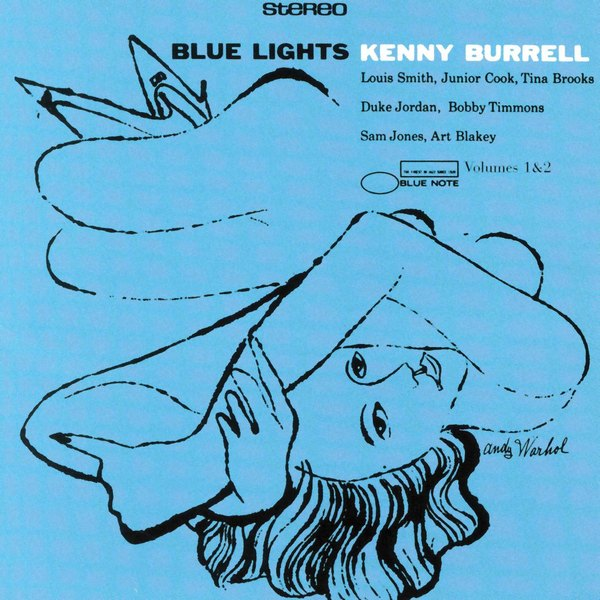
CRVI001159Kenny Burrell - Blue Lights, Volumes 1 & 2
Designed by Reid Miles, artwork by Andy Warhol · Blue Note BLP 1596 · 1958
Designed by Reid Miles, artwork by Andy Warhol · Blue Note BLP 1596 · 1958

CRVI000178Sonny Rollins - Sonny Rollins
Designed by Bob Weinstock · Prestige LP 7029 · 1953
Designed by Bob Weinstock · Prestige LP 7029 · 1953

CRVI000781Robert Brownjohn, Ivan Chermayeff, Thomas Geismar - Artist’s Proof for the cover of Pepsi-Cola World, October 1958
Lithograph · 33 × 26.7 cm · 1958
Lithograph · 33 × 26.7 cm · 1958

CRVI000143Kenny Drew - This Is New
Designed by Paul Bacon · 1957
Designed by Paul Bacon · 1957
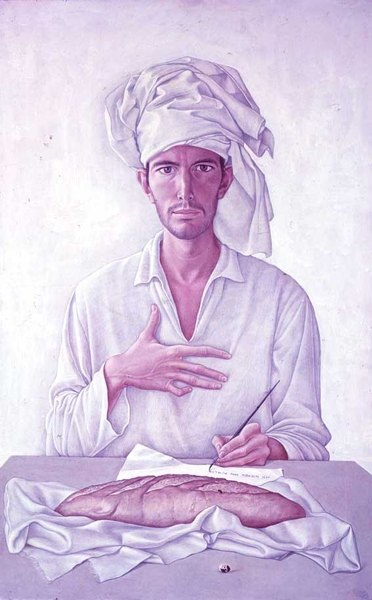
CRVI001230Mati Klarwein - Self-portrait after Dürer
Painting · plate P01-50s-self-durer on the artist's own site · 1950s
Painting · plate P01-50s-self-durer on the artist's own site · 1950s

CRVI000291The Isley Brothers - Shout!
Designer unknown · RCA · 1959
Designer unknown · RCA · 1959

CRVI000144Bud Shank Quartet - Jazz at Cal-Tech
Designed by William Claxton · Pacific Jazz 1219 · 1956
Designed by William Claxton · Pacific Jazz 1219 · 1956

CRVI000151Charles Mingus - The Clown
Designed by Marvin Israel · Atlantic 1260 · 1957
Designed by Marvin Israel · Atlantic 1260 · 1957

CRVI001000Mueller Welt, Inc. - MUELLER WELT
Trademark · Contact Lenses · Chicago, Illinois · designer unknown · 1952
Trademark · Contact Lenses · Chicago, Illinois · designer unknown · 1952

CRVI000155Red Garland Trio - Groovy
Designed by Reid Miles · Prestige 7113 · 1957
Designed by Reid Miles · Prestige 7113 · 1957
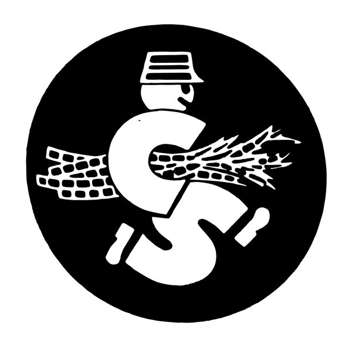
CRVI000887Colonial Sugars Company - S
Trademark · Sugar and Sugar Cane · Jersey City, New Jersey · designer unknown · 1953
Trademark · Sugar and Sugar Cane · Jersey City, New Jersey · designer unknown · 1953
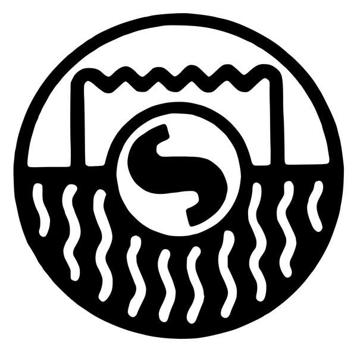
CRVI000910Shure Brothers, Inc. - S
Trademark · Piezoelectric Instruments to Measure and Analyze Vibrations · Chicago, Illinois · designer unknown · 1952
Trademark · Piezoelectric Instruments to Measure and Analyze Vibrations · Chicago, Illinois · designer unknown · 1952
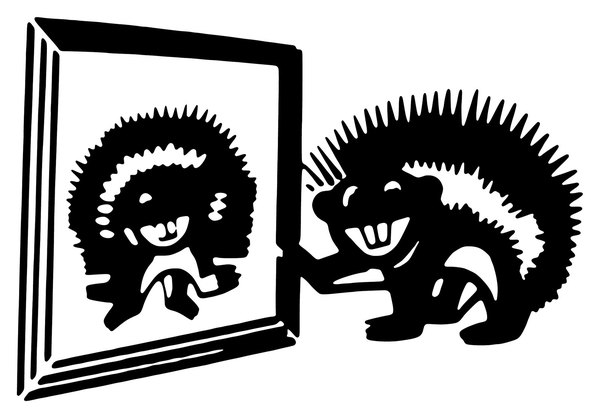
CRVI000904Nixalite Company of America - Two bristling creatures at a barrier; Nixalite's trade is the spiked barrier itself
Trademark · Bird and Rodent Barrier Structure · Davenport, Iowa · designer unknown · 1956
Trademark · Bird and Rodent Barrier Structure · Davenport, Iowa · designer unknown · 1956
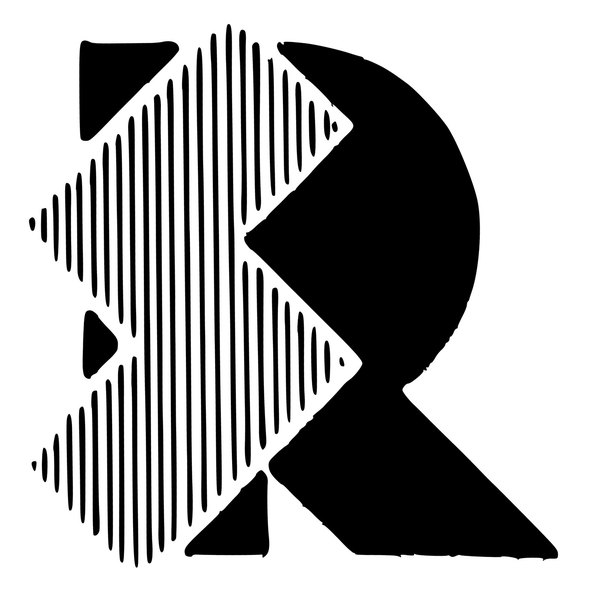
CRVI000931Rotron Manufacturing Company, Inc. - R
Trademark · Electric Switches · Woodstock, New York · designer unknown · 1954
Trademark · Electric Switches · Woodstock, New York · designer unknown · 1954
CRVI000945Automotive Products, Inc. - AP
Trademark · Apparatus for Testing and Analyzing Diesel Fuel Pumps · Portland, Oregon · designer unknown · 1956
Trademark · Apparatus for Testing and Analyzing Diesel Fuel Pumps · Portland, Oregon · designer unknown · 1956

CRVI000883The Cooper Alloy Foundry Company - CA
Trademark · Pipe Fittings and Valves · Hillside, New Jersey · designer unknown · 1950
Trademark · Pipe Fittings and Valves · Hillside, New Jersey · designer unknown · 1950

CRVI000942Pioneer Equipment Sales Company - PHONE MATE
Trademark · Telephone Accessories · Pasadena, California · designer unknown · 1955
Trademark · Telephone Accessories · Pasadena, California · designer unknown · 1955

CRVI001157John Coltrane, Frank Wess, Paul Quinichette - Wheelin' & Dealin'
Designed by Esmond Edwards · Prestige PRLP 7131 · 1958
Designed by Esmond Edwards · Prestige PRLP 7131 · 1958

CRVI000896Braunstein Freres, Inc. - ZIG-ZAG
Trademark · Cigarette Paper · New York, New York · designer unknown · 1953
Trademark · Cigarette Paper · New York, New York · designer unknown · 1953

CRVI000897Braunstein Freres, Inc. - The bearded zouave smoking — the Zig-Zag figure, paired with the ZIG-ZAG wordmark on the facing frame
Trademark · Cigarette Paper · New York, New York · designer unknown · 1953
Trademark · Cigarette Paper · New York, New York · designer unknown · 1953

CRVI000902Manson Laboratories, Inc. - manson
Trademark · Devices to Measure Frequencies · Stamford, Connecticut · designer unknown · 1957
Trademark · Devices to Measure Frequencies · Stamford, Connecticut · designer unknown · 1957

CRVI000886Ferno Manufacturing Company - ONE MAN
Trademark · Ambulance Cots and Morticians' Carts · Circleville, Ohio · designer unknown · 1957
Trademark · Ambulance Cots and Morticians' Carts · Circleville, Ohio · designer unknown · 1957

CRVI000949Nutrition Square, Inc. - NUTRITION SQUARE
Trademark · Pittsburgh, Pennsylvania · designer unknown · 1956
Trademark · Pittsburgh, Pennsylvania · designer unknown · 1956
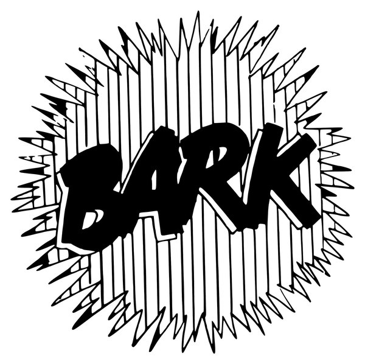
CRVI000946Bark Dog Food Company - BARK
Trademark · Dog Meal · Midland, Michigan · designer unknown · 1950
Trademark · Dog Meal · Midland, Michigan · designer unknown · 1950

CRVI000914Vittoria Necchi Societa per Azioni - N
Trademark · Sewing Machines · Pavia, Italy · designer unknown · 1952
Trademark · Sewing Machines · Pavia, Italy · designer unknown · 1952

CRVI001009Fairway Foods, Inc. - Radiant Roast
Trademark · Coffee · St. Paul, Minnesota · designer unknown · 1957
Trademark · Coffee · St. Paul, Minnesota · designer unknown · 1957

CRVI000922United Co-operatives, Inc. - UNICO Ac-cent
Trademark · Ready-Mixed Paints · Alliance, Ohio · designer unknown · 1954
Trademark · Ready-Mixed Paints · Alliance, Ohio · designer unknown · 1954

CRVI000939Dallas Iron & Wire Works, Inc. - Add-A-Play
Trademark · Swings, Gliders, Gyms, Exercise Frames and Parts Thereof · Dallas, Texas · designer unknown · 1953
Trademark · Swings, Gliders, Gyms, Exercise Frames and Parts Thereof · Dallas, Texas · designer unknown · 1953

CRVI000901Micro-Master, Inc. - An atom whose nucleus is a head
Trademark · Photograph Developing · Kansas City, Missouri · designer unknown · 1957
Trademark · Photograph Developing · Kansas City, Missouri · designer unknown · 1957

CRVI000924Bowlerama, Inc. - BOWLERAMA
Trademark · Promoting the Business of Bowling Alley Operations · Minneapolis, Minnesota · designer unknown · 1954
Trademark · Promoting the Business of Bowling Alley Operations · Minneapolis, Minnesota · designer unknown · 1954

CRVI000934Miljam Plastic Instrument Manufacturing Company, Inc. - Injex
Trademark · Plastic instruments · designer unknown · 1952
Trademark · Plastic instruments · designer unknown · 1952

CRVI001006Wilson & Company, Inc. - W
Trademark · Fresh, Cooked, Smoked, Cured and Frozen Meats · Chicago, Illinois · designer unknown · 1957
Trademark · Fresh, Cooked, Smoked, Cured and Frozen Meats · Chicago, Illinois · designer unknown · 1957

CRVI000943Homasote Company - BIG SHEETS
Trademark · Wall Board and Fibrous Material · Trenton, New Jersey · designer unknown · 1955
Trademark · Wall Board and Fibrous Material · Trenton, New Jersey · designer unknown · 1955

CRVI000940H.F. Stimm, Inc. - S
Trademark · Construction and Repair of Buildings and Bridges · Buffalo, New York · designer unknown · 1956
Trademark · Construction and Repair of Buildings and Bridges · Buffalo, New York · designer unknown · 1956

CRVI000921Dow Corning Corporation - DOW CORNING
Trademark · Organopolysiloxane Fluids for Use as Polishes and Polish Ingredients · Midland, Michigan · designer unknown · 1957
Trademark · Organopolysiloxane Fluids for Use as Polishes and Polish Ingredients · Midland, Michigan · designer unknown · 1957

CRVI001003Cleveland Institute of Radio Electronics - C i
Trademark · Pamphlets, Books, and Other Publications · Cleveland, Ohio · designer unknown · 1956
Trademark · Pamphlets, Books, and Other Publications · Cleveland, Ohio · designer unknown · 1956